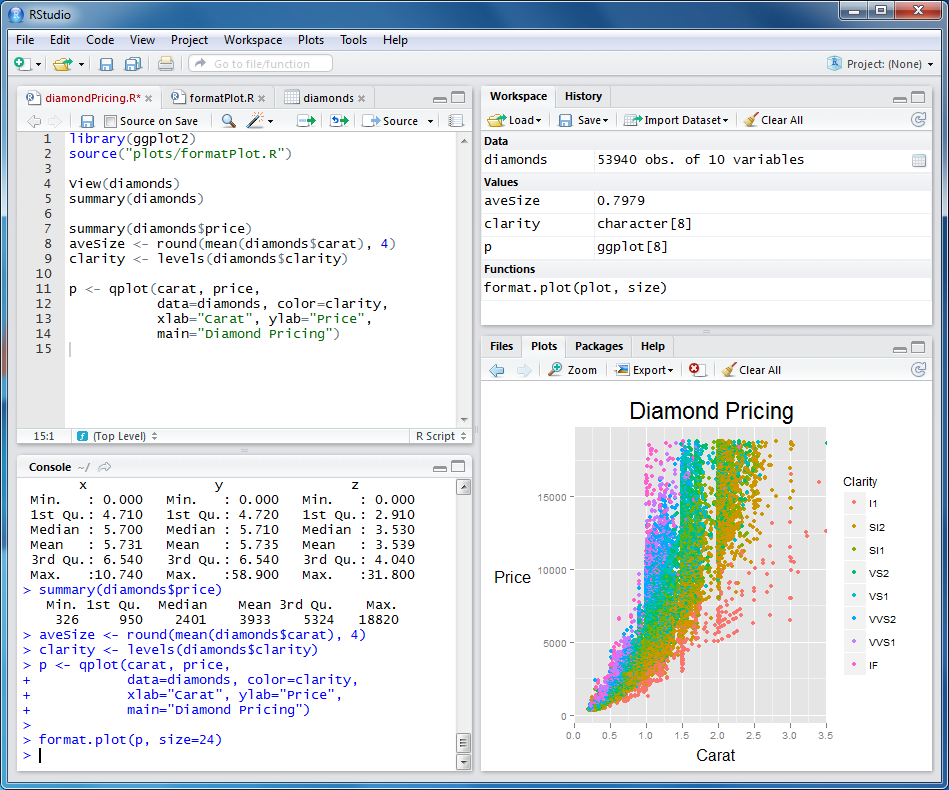
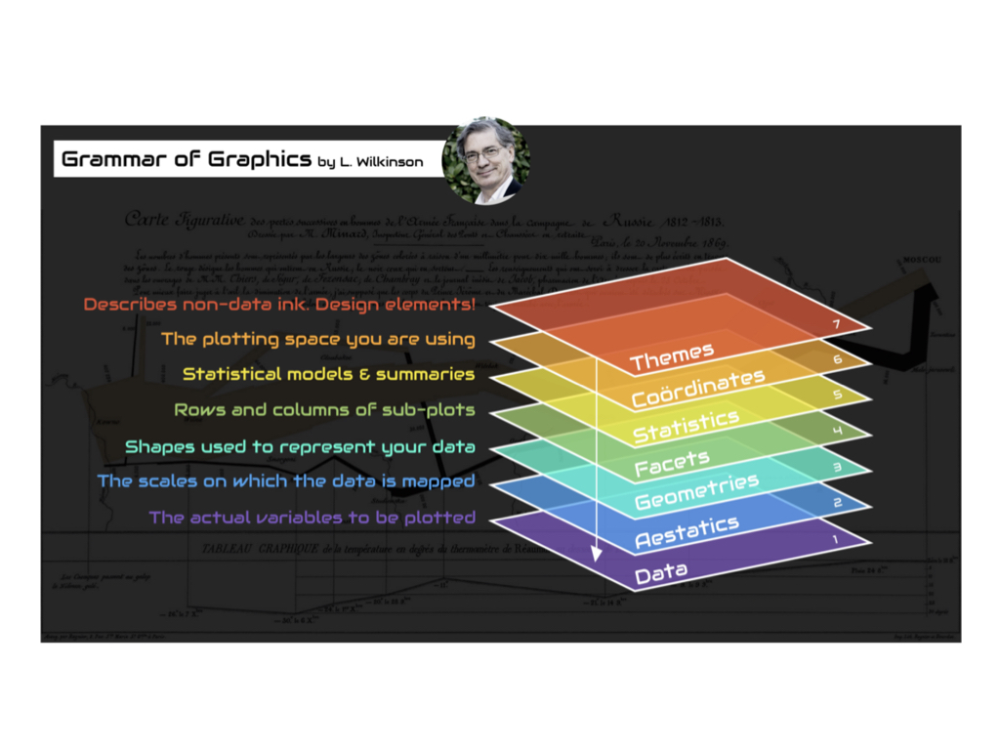

[1] 16Week 4 Computational Tools for Bioengineers
Bill Cresko
Goals for today
- Finish using GREP for large files
- Introduction to Scripts in Unix and R
- Using R Studio and Visual Studio Code (VSC) as script editors
Working with Large Genomic Data Files
Human Chromosome Data
- Genomic data files can be massive (human genome ~6 billion base pairs)
- FASTA format is standard for sequence data
- Perfect use case for Unix pipes and redirection
- Let’s work with human genome assembly version 38 (~3.1 GB)
Downloading Genomic Data
Download version 38 of the human genome from NCBI:
# Using `wget` to download human genome
wget https://ftp.ncbi.nlm.nih.gov/genomes/all/GCF/000/001/405/\
GCF_000001405.40_GRCh38.p14/GCF_000001405.40_GRCh38.p14_genomic.fna.gz
# Or using `curl` and save with specific name
curl -o human_genome.fa.gz https://ftp.ncbi.nlm.nih.gov/genomes/all/GCF/000/001/405/\
GCF_000001405.40_GRCh38.p14/GCF_000001405.40_GRCh38.p14_genomic.fna.gzwgetandcurlare both tools for downloading files- The backslash (
\) allows long URLs to span multiple lines .gzextension means the file is compressed
GREP and Regular Expressions
What is GREP?
- GREP = Global Regular Expression Print
- Powerful text search tool in Unix
- Searches for patterns in files or input streams
- Returns lines that match the pattern
- Essential for large data processing
Basic syntax:
Basic GREP Usage
# Search for a simple pattern
grep "ACGT" sequences.txt
# Case-insensitive search
grep -i "gene" annotations.txt
# Count matching lines
grep -c ">" proteins.fasta
# Show line numbers
grep -n "ERROR" logfile.txt
# Invert match (show non-matching lines)
grep -v "^#" data.txt # Skip comment lines
# Search multiple files
grep "mutation" *.txtIntroduction to Regular Expressions
Regular expressions (regex) are patterns for matching text:
.= any single character*= zero or more of preceding character+= one or more of preceding character?= zero or one of preceding character^= start of line$= end of line[abc]= any character in set[^abc]= any character NOT in set\= escape special characters
Basic Regex Examples
# Match DNA sequences
grep "^ATG" genes.txt # Lines starting with ATG
grep "TAG$" genes.txt # Lines ending with TAG
grep "A.G" sequences.txt # A, any char, then G
# Character classes
grep "[ACGT]" dna.txt # Any DNA base
grep "[^ACGT]" dna.txt # Non-DNA characters
grep "[0-9]" data.txt # Any digit
grep "[A-Za-z]" text.txt # Any letter
# Quantifiers
grep "A\{3\}" sequence.txt # Exactly 3 A's
grep "T\{2,4\}" sequence.txt # 2 to 4 T's
grep "GC*" sequence.txt # G followed by 0+ C'sExtended Regular Expressions
Use grep -E or egrep for extended regex:
# Alternation (OR)
grep -E "start|stop|pause" commands.txt
# Grouping
grep -E "(ATG|GTG|TTG)" codons.txt
# Plus quantifier (one or more)
grep -E "A+T+G+" sequences.txt
# Question mark (optional)
grep -E "colou?r" british_american.txt
# Complex patterns for bioinformatics
grep -E "^>sp\|[A-Z0-9]+\|" uniprot.fasta # UniProt headers
grep -E "[ACGT]{20,}" primers.txt # Sequences 20bp+Combining GREP with Pipes
# Count unique sequence headers
grep "^>" sequences.fasta | sort | uniq | wc -l
# Extract gene names from GFF file
grep -v "^#" annotation.gff | cut -f9 | grep -oE "gene=[^;]+"
# Find sequences without stop codons
grep -v -E "(TAA|TAG|TGA)" orfs.txt
# Quality control pipeline
zcat reads.fastq.gz | grep -A1 "^@" | grep -v "^--" |
grep -E "^[ACGTN]+$" | grep -c "N"
# Search and replace with sed (uses regex)
grep "gene" data.txt | sed 's/gene/GENE/g'Analyzing Sequence Content
Combine Unix tools to analyze genomic data:
# Count total bases in chromosome 21
grep -v "^>" human_genome.fa | tr -d '\n' | wc -c
# Count each type of base
grep -v "^>" human_genome.fa | tr -d '\n' |
fold -w1 | sort | uniq -c
# Calculate GC content
grep -v "^>" human_genome.fa | tr -d '\n' |
tr -cd 'GCgc' | wc -c
# Find simple sequence repeats (e.g., "ATATAT...")
grep -v "^>" human_genome.fa | grep -oE "(AT){5,}"Working with Compressed Files
Most genomic data is compressed to save space:
# View compressed files without extracting
zcat file.gz | head
zless file.gz
zgrep "pattern" file.gz
# Compress and decompress
gzip file.txt # Creates file.txt.gz
gunzip file.txt.gz # Restores file.txt
gzip -k file.txt # Keep original file
# Work directly with compressed files
zcat reads.fastq.gz | grep "^@" | wc -l
# Concatenate compressed files
zcat file1.gz file2.gz | gzip > combined.gzExamining Large Files Efficiently
Don’t use cat on huge files! Use these approaches:
# Decompress and look at first 10 lines
gunzip -c human_genome.fa.gz | head -10
# Check file size before and after decompression
ls -lh human_genome.fa.gz
gunzip human_genome.fa.gz
ls -lh human_genome.fa
# Count sequences in FASTA file (lines starting with >)
grep "^>" human_genome.fa | wc -l
# View sequence headers only
grep "^>" human_genome.fa | lessHomework - microbial genome analysis
With a sample FASTA file:
- Download a bacterial genome from NCBI
- Count the number of genes (sequences)
- Calculate the total genome size
- Find the longest and shortest genes
- Calculate overall GC content
- Search for specific motifs or restriction sites
- Extract protein-coding sequences based on headers
Scripting in Unix, R and Python

What is a Shell Script?
- Text file containing Unix commands
- Automates repetitive tasks
- Makes complex workflows reproducible
- Essential for bioinformatics pipelines
- Can include:
- Variables and arrays
- Conditionals (if/then/else)
- Loops (for/while)
- Functions
- Command-line arguments
Creating Your First Script
#!/bin/bash
# This is a shebang - tells system which interpreter to use
# This is a comment - documents your code
echo "Hello, Bioengineering!"
# Set a variable
NAME="DNA Analysis"
echo "Running $NAME"
# Use command output as variable
DATE=$(date +%Y-%m-%d)
echo "Analysis date: $DATE"
# Simple calculation
COUNT=5
DOUBLE=$((COUNT * 2))
echo "Double of $COUNT is $DOUBLE"Save as first_script.sh and run with bash first_script.sh
Making Scripts Executable
# Check current permissions
ls -l first_script.sh
# Make executable (add execute permission)
chmod +x first_script.sh
# Now you can run it directly
./first_script.shBest practice: Always use chmod +x for your scripts
Command-Line Arguments
#!/bin/bash
# Script: process_fasta.sh
# $0 is the script name
echo "Script name: $0"
# $# is the number of arguments
echo "Number of arguments: $#"
# Check if enough arguments provided FIRST
if [ $# -lt 2 ]; then
echo "Usage: $0 input.fasta output.txt"
exit 1
fi
# Now safe to use the arguments
echo "Processing file: $1"
echo "Output will be: $2"
# $@ is all arguments (should be quoted)
echo "All arguments: $@"Run as: ./process_fasta.sh input.fa results.txt
Variables and Arrays
#!/bin/bash
# Variables (no spaces around =)
SPECIES="Homo sapiens"
CHROMOSOME=21
GENE_COUNT=234
# Arrays
BASES=(A C G T)
echo "First base: ${BASES[0]}"
echo "All bases: ${BASES[@]}"
# Add to array
BASES+=(N)
# Array length
echo "Number of bases: ${#BASES[@]}"
# String operations
FILE="sample_001.fastq.gz"
NAME="${FILE%.fastq.gz}" # Remove suffix
echo "Sample name: $NAME"Conditionals (if/then/else)
#!/bin/bash
# Numeric comparisons
COUNT=100
if [ $COUNT -gt 50 ]; then
echo "High read count"
elif [ $COUNT -gt 10 ]; then
echo "Medium read count"
else
echo "Low read count"
fi
# String comparisons
FILETYPE="fasta"
if [ "$FILETYPE" = "fasta" ]; then
echo "Processing FASTA file"
fi
# File tests
if [ -f "data.txt" ]; then
echo "File exists"
fi
if [ -d "results" ]; then
echo "Directory exists"
else
mkdir results
fiLoops in Shell Scripts
#!/bin/bash
# For loop over list
for BASE in A C G T; do
echo "Processing base: $BASE"
done
# For loop over files
for FILE in *.fasta; do
echo "Analyzing $FILE"
grep -c ">" "$FILE"
done
# For loop with counter
for i in {1..10}; do
echo "Iteration $i"
done
# While loop
COUNT=1
while [ $COUNT -le 5 ]; do
echo "Count: $COUNT"
COUNT=$((COUNT + 1))
done
# Read file line by line
while read LINE; do
echo "Processing: $LINE"
done < input.txtFunctions in Scripts
#!/bin/bash
# Define a function
count_sequences() {
local FILE=$1 # Local variable
local COUNT=$(grep -c "^>" "$FILE")
echo "File $FILE has $COUNT sequences"
return $COUNT # Optional return value
}
# Another function with multiple parameters
process_fasta() {
local INPUT=$1
local OUTPUT=$2
echo "Processing $INPUT..."
grep "^>" "$INPUT" > "$OUTPUT"
count_sequences "$INPUT"
}
# Call functions
count_sequences "proteins.fasta"
process_fasta "input.fasta" "headers.txt"Error Handling
#!/bin/bash
# Exit on error
set -e
# Exit on undefined variable
set -u
# Pipe failure detection
set -o pipefail
# Custom error handling
check_file() {
if [ ! -f "$1" ]; then
echo "Error: File $1 not found!" >&2
exit 1
fi
}
# Trap errors
trap 'echo "Error on line $LINENO"' ERR
# Try-catch style
if ! grep "pattern" file.txt > /dev/null 2>&1; then
echo "Pattern not found"
fiReal Bioinformatics Script Example
#!/bin/bash
# Script: fasta_stats.sh
# Purpose: Calculate basic statistics for FASTA files
# Check arguments
if [ $# -ne 1 ]; then
echo "Usage: $0 sequences.fasta"
exit 1
fi
INPUT=$1
# Check if file exists
if [ ! -f "$INPUT" ]; then
echo "Error: File $INPUT not found!"
exit 1
fi
echo "=== FASTA Statistics for $INPUT ==="
# Count sequences
SEQ_COUNT=$(grep -c "^>" "$INPUT")
echo "Number of sequences: $SEQ_COUNT"
# Calculate total length
TOTAL_LENGTH=$(grep -v "^>" "$INPUT" | tr -d '\n' | wc -c)
echo "Total length: $TOTAL_LENGTH bp"
# Average length
AVG_LENGTH=$((TOTAL_LENGTH / SEQ_COUNT))
echo "Average length: $AVG_LENGTH bp"
# GC content
GC_COUNT=$(grep -v "^>" "$INPUT" | tr -d '\n' | grep -o "[GC]" | wc -l)
GC_PERCENT=$((GC_COUNT * 100 / TOTAL_LENGTH))
echo "GC content: $GC_PERCENT%"Best Practices for Shell Scripts
- Always include a shebang:
#!/bin/bash - Comment your code: Explain what and why
- Use meaningful variable names:
GENE_COUNTnotGC - Check inputs: Validate files exist and arguments are correct
- Handle errors gracefully: Use
set -eand error checking - Make scripts portable: Don’t hardcode paths
- Use version control: Track changes with git
- Test incrementally: Build scripts step by step
- Create help messages: Document usage
- Log important steps: Keep records of what was done
BREAK
R scripts and Markdown
Why use R?
- Good general scripting tool for statistics and mathematics
- Powerful and flexible and free
- Runs on all computer platforms
- New enhancements coming out all the time
- Superb data management & graphics capabilities
Why use R?
- Reproducibility - can keep your scripts to see exactly what was done
- You can write your own functions
- Lots of online help available
- Can use a nice GUI front end such as
Rstudio - Can embed your
Ranalyses in dynamic, polished files usingMarkdown - Markdown can be reused for websites, papers, books, presentations…
R scripts and Markdown files
- Often we want to write scripts that can just be run -
R scripts - We can also embed code in Markdown files that provide more annotations
- This improves interpertability and reproducibility
- You can insert
R code chunksintoQuarto markdowndocuments - https://quarto.org/docs/authoring/markdown-basics.html
Rscript basics
- A series of R commands that will be executed
- Can add comments using hashtags
# - Can have pipes (
|>) to connect one step to the next
Markdown basics
- a document with R code chunks (and other chunks) embedded in it
- a very simplified way for standard typesetting
- simple markdown can be rendered in numerous different ways
- Lists, codeblocks, images and more can all be inserted
- Also much more complex formatting like equations
Inserting equations in markdown
\[e=mc^2\]
\[\iint\limits_{a}^{b} f(x,y) \, dx \, dy\]
BASICS of R
- Commands can be submitted through the terminal, console or scripts
- In your scripts, anything that follows ‘#’ symbol (aka hash) is just for humans
- Notice on these slides I’m evaluating the code chunks and showing output
- The output is shown here after the two
#symbols and the number of output items is in[] - Also notice that
Rfollows the normal priority of mathematical evaluation
Assigning Variables
- A better way to do this is to assign variables
- Variables are assigned values using the
<-operator. - Variable names must begin with a letter, but other than that, just about anything goes.
- Do keep in mind that
Ris case sensitive.
Assigning Variables
These do not work
Arithmetic operations on functions
- Arithmetic operations can be performed easily on functions as well as numbers.
- Try the following, and then your own.
- Note that the last of these -
log- is a built in function ofR, and therefore the object of the function needs to be put in parentheses - These parentheses will be important, and we’ll come back to them later when we add arguments after the object in the parentheses
- The outcome of calculations can be assigned to new variables as well, and the results can be checked using the ‘print’ command
Arithmetic operations on functions
STRINGS
- Variables and operations can be performed on characters as well
- Note that characters need to be set off by quotation marks to differentiate them from numbers
- The
cstands forconcatenate - Note that we are using the same variable names as we did previously, which means that we’re overwriting our previous assignment
- A good rule of thumb is to use new names for each variable, and make them short but still descriptive
STRINGS
FACTORS
- The variable
zis now what is called a list of character values. - Sometimes we would like to treat the characters as if they were units for subsequent calculations.
- These are called
factors, and we can redefine our character variables as factors. - This might seem a bit strange, but it’s important for statistical analyses where we might want to see the mean or variance for two different treatments.
FACTORS
- Note that factor levels are reported alphabetically
VECTORS
- In general
Rthinks in terms of vectors (a list of characters, factors or numerical values) and it will benefit anyRuser to try to write programs with that in mind, as it will simplify most things. - Vectors can be assigned directly using the ‘c()’ function and then entering the exact values.
VECTORS
Basic Statistics
- Many functions exist to operate on vectors.
- Combine these with your previous variable to see what happens.
- Also, try to find other functions (e.g. standard deviation).
Basic Statistics
- Notice that the last function (
sample) has an argument (replace=T) - Arguments simply modify or direct the function in some way
- There are many arguments for each function, some of which are defaults
Getting Help
- Getting Help on any function is very easy - just type a question mark and the name of the function.
- There are functions for just about anything within
Rand it is easy enough to write your own functions if none already exist to do what you want to do. - In general, function calls have a simple structure: a function name, a set of parentheses and an optional set of parameters to send to the function.
- Help pages exist for all functions that, at a minimum, explain what parameters exist for the function.
- Help can be accessed a few ways - try them :
Getting Help
Creating vectors
- Creating vector of new data by entering it by hand can be a drag
- However, it is also very easy to use functions such as
seqandsample - Try the examples below Can you figure out what the three arguments in the parentheses mean?
- Try varying the arguments to see what happens.
- Don’t go too crazy with the last one or your computer might slow way down
Creating vectors
[1] 0.0 0.1 0.2 0.3 0.4 0.5 0.6 0.7 0.8 0.9 1.0 1.1 1.2 1.3 1.4
[16] 1.5 1.6 1.7 1.8 1.9 2.0 2.1 2.2 2.3 2.4 2.5 2.6 2.7 2.8 2.9
[31] 3.0 3.1 3.2 3.3 3.4 3.5 3.6 3.7 3.8 3.9 4.0 4.1 4.2 4.3 4.4
[46] 4.5 4.6 4.7 4.8 4.9 5.0 5.1 5.2 5.3 5.4 5.5 5.6 5.7 5.8 5.9
[61] 6.0 6.1 6.2 6.3 6.4 6.5 6.6 6.7 6.8 6.9 7.0 7.1 7.2 7.3 7.4
[76] 7.5 7.6 7.7 7.8 7.9 8.0 8.1 8.2 8.3 8.4 8.5 8.6 8.7 8.8 8.9
[91] 9.0 9.1 9.2 9.3 9.4 9.5 9.6 9.7 9.8 9.9 10.0 [1] 10.0 9.9 9.8 9.7 9.6 9.5 9.4 9.3 9.2 9.1 9.0 8.9 8.8 8.7 8.6
[16] 8.5 8.4 8.3 8.2 8.1 8.0 7.9 7.8 7.7 7.6 7.5 7.4 7.3 7.2 7.1
[31] 7.0 6.9 6.8 6.7 6.6 6.5 6.4 6.3 6.2 6.1 6.0 5.9 5.8 5.7 5.6
[46] 5.5 5.4 5.3 5.2 5.1 5.0 4.9 4.8 4.7 4.6 4.5 4.4 4.3 4.2 4.1
[61] 4.0 3.9 3.8 3.7 3.6 3.5 3.4 3.3 3.2 3.1 3.0 2.9 2.8 2.7 2.6
[76] 2.5 2.4 2.3 2.2 2.1 2.0 1.9 1.8 1.7 1.6 1.5 1.4 1.3 1.2 1.1
[91] 1.0 0.9 0.8 0.7 0.6 0.5 0.4 0.3 0.2 0.1 0.0Creating vectors
[1] 100.00 98.01 96.04 94.09 92.16 90.25 88.36 86.49 84.64 82.81
[11] 81.00 79.21 77.44 75.69 73.96 72.25 70.56 68.89 67.24 65.61
[21] 64.00 62.41 60.84 59.29 57.76 56.25 54.76 53.29 51.84 50.41
[31] 49.00 47.61 46.24 44.89 43.56 42.25 40.96 39.69 38.44 37.21
[41] 36.00 34.81 33.64 32.49 31.36 30.25 29.16 28.09 27.04 26.01
[51] 25.00 24.01 23.04 22.09 21.16 20.25 19.36 18.49 17.64 16.81
[61] 16.00 15.21 14.44 13.69 12.96 12.25 11.56 10.89 10.24 9.61
[71] 9.00 8.41 7.84 7.29 6.76 6.25 5.76 5.29 4.84 4.41
[81] 4.00 3.61 3.24 2.89 2.56 2.25 1.96 1.69 1.44 1.21
[91] 1.00 0.81 0.64 0.49 0.36 0.25 0.16 0.09 0.04 0.01
[101] 0.00Creating vectors
[1] 100.00 98.01 96.04 94.09 92.16 90.25 88.36 86.49 84.64 82.81
[11] 81.00 79.21 77.44 75.69 73.96 72.25 70.56 68.89 67.24 65.61
[21] 64.00 62.41 60.84 59.29 57.76 56.25 54.76 53.29 51.84 50.41
[31] 49.00 47.61 46.24 44.89 43.56 42.25 40.96 39.69 38.44 37.21
[41] 36.00 34.81 33.64 32.49 31.36 30.25 29.16 28.09 27.04 26.01
[51] 25.00 24.01 23.04 22.09 21.16 20.25 19.36 18.49 17.64 16.81
[61] 16.00 15.21 14.44 13.69 12.96 12.25 11.56 10.89 10.24 9.61
[71] 9.00 8.41 7.84 7.29 6.76 6.25 5.76 5.29 4.84 4.41
[81] 4.00 3.61 3.24 2.89 2.56 2.25 1.96 1.69 1.44 1.21
[91] 1.00 0.81 0.64 0.49 0.36 0.25 0.16 0.09 0.04 0.01
[101] 0.00Drawing samples from distributions
- Here is a way to create your own data sets that are random samples.
- Again, play around with the arguments in the parentheses to see what happens.
Drawing samples from distributions

Drawing samples from distributions

Drawing samples from distributions

Drawing samples from distributions
- You’ve probably figured out that y from the last example is drawing numbers with equal probability.
- What if you want to draw from a distribution?
- Again, play around with the arguments in the parentheses to see what happens.
Drawing samples from distributions

dnorm()generates the probability density, which can be plotted using thecurve()function.- Note that is curve is added to the plot using
add=TRUE
Visualizing Data
- So far you’ve been visualizing just the list of output numbers
- Except for the last example where I snuck in a
histfunction. - You can also visualize all of the variables that you’ve created using the
plotfunction (as well as a number of more sophisticated plotting functions). - Each of these is called a
high levelplotting function, which sets the stage Low levelplotting functions will tweak the plots and make them beautiful
Visualizing Data
- What do you think that each of the arguments means for the plot function?
- A cool thing about
Ris that the options for the arguments make sense. - Try adjusting an argument and see if it works
- Note next week we will be exploring the plotting in
GGPlot2
Visualizing Data

Putting plots in a single figure
- On the next slide
- The first line of the lower script tells R that you are going to create a composite figure that has two rows and two columns. Can you tell how?
- Now, modify the code to add two more variables and add one more row of two panels.
Putting plots in a single figure
par(mfrow=c(2,2))
plot (seq_1, xlab="time", ylab ="p in population 1", type = "p", col = 'red')
plot (seq_2, xlab="time", ylab ="p in population 2", type = "p", col = 'green')
plot (seq_square, xlab="time", ylab ="p2 in population 2", type = "p", col = 'blue')
plot (seq_square_new, xlab="time", ylab ="p in population 1", type = "l", col = 'yellow')
Example using binomial distribution
- As above for the normal distribution, data can be generated by being sampled from nearly any distribution and then visualized.
- Below I’m having you use the ‘histogram’ function. What does it do?
Example using binomial distribution
- 10 successes (out of 20 trials) is the most frequent outcome

Example using binomial distribution
- This kind of statement can be run in one line as well, which is sometimes easier.

Creating Data Frames in R
- As you have seen, in R you can generate your own random data set drawn from nearly any distribution very easily.
- Often we will want to use collected data.
- Now, let’s make a dummy dataset to get used to dealing with data frames
- Set up three variables (hydrogel_concentration, compression and conductivity) as vectors
- Create a data frame where vectors become columns
- Now you have a hand-made data frame with row names
- Take a look at it in the data section of RStudio
Reading in and Exporting Data Frames
Indexing in data frames
- Next up - indexing just a subset of the data
- This is a very important idea in R, that you can analyze just a subset of the data.
- This is analyzing only the data in the file you made that has the factor value ‘mixed’.
Types of vectors of data
intstands for integersdblstands for doubles, or real numberschrstands for character vectors, or stringsdttmstands for date-times (a date + a time)lglstands for logical, vectors that contain only TRUE or FALSEfctrstands for factors, which R uses to represent categorical variables with fixed possible valuesdatestands for dates
- Integer and double vectors are known collectively as numeric vectors.
- In
Rnumbers are doubles by default.
Types of vectors of data
- Logical vectors can take only three possible values:
FALSETRUENAwhich is ‘not available’.
- Integers have one special value: NA, while doubles have four:
NANaNwhich is ‘not a number’Inf-Inf## Reading in Data Frames in R {.smaller}
- A strength of
Ris being able to import data from an external source - Create the same table that you did above in a spreadsheet like Excel
- Export it to comma separated and tab separated text files for importing into
R. - The first will read in a comma-delimited file, whereas the second is a tab-delimited
- In both cases the header and row.names arguments indicate that there is a header row and row label column
- Note that the name of the file by itself will have R look in the CWD, whereas a full path can also be used
Markdown
What is it?
Markdown is a lightweight markup language for creating formatted text using a plain-text editor
Rmarkdown
R Markdown (https://rmarkdown.rstudio.com/) provides an authoring framework for data science.
- You can use an R Markdown files to save and execute code *and* generate high quality reports that can be shared with an audience.
- You can make html, pdf, docx, websites, slides, etc.
When you save your document, the output will be in the format indicated in your YAML header. This could be an html document, Word document, pdf, website, book, etc.
Getting started
- Open a new markdown document from RStudio
You should see a document that is already populated with some example text and code
This is markdown
Note that --- delineates yaml. This controls document-level settings and rendering.
This is Markdown
- By default, the code and output will print to your document
- Note the back tick marks - these delineate the code
- The {r} indicates this is r code
Navigating chunks
- Easy to run chunks - a few ways to do this
- Top right of each chunk - just run, run all above, etc.
- Cog wheel at the top of the markdown document - run options
- Keyboard shortcuts
Chunk options
include = FALSEprevents code and results from appearing in the finished file. R Markdown still runs the code in the chunk, and the results can be used by other chunks.echo = FALSEprevents code, but not the results from appearing in the finished file. This is a useful way to embed figures.message = FALSEprevents messages that are generated by code from appearing in the finished file.warning = FALSEprevents warnings that are generated by code from appearing in the finished.fig.cap = "..."adds a caption to graphical results.
Chunk options
eval = FALSEshows code, but doesn’t run itresults = 'hide'runs code, but doesn’t show resultsfig.height, fig.widthset the dimensions of plotscache = TRUEsaves the results of a code chunk, can be helpful if a particular code chunk is intensive
Inline code
This is the in-line code to count rows in the iris data set
There are 150 observations.
Markdown formatting
italic
bold
\(A = \pi \times r^{2}\)
Markdown lists
- Item 1
- Item 2
- Item 2a
- Item 2b
Markdown lists
- Item 1
- Item 2
- Item 3
- Item 3a
- Item 3b
More on Markdown
- https://bookdown.org/yihui/rmarkdown-cookbook/
- https://rstudio.com/wp-content/uploads/2016/03/rmarkdown-cheatsheet-2.0.pdf
- Lots more fun stuff you can do!
Typesetting Mathematics
Since ‘tex’ in embedded in markdown you can type set mathematics easily using LaTeX (https://en.wikibooks.org/wiki/LaTeX)
Essentially, just surround your mathematics in $ symbols
$$ centers the expressions
Typeset mathematics
Poisson Sampling Equation
\[\large Pr(Y=r) = \frac{e^{-\mu}\mu^r}{r!}\]
Differential Equations
\[\iint xy^2\,dx\,dy =\frac{1}{6}x^2y^3\]
Matrix formulations
\[ \begin{matrix} -2 & 1 & 0 & 0 & \cdots & 0 \\ 1 & -2 & 1 & 0 & \cdots & 0 \\ 0 & 1 & -2 & 1 & \cdots & 0 \\ 0 & 0 & 1 & -2 & \ddots & \vdots \\ \vdots & \vdots & \vdots & \ddots & \ddots & 1 \\ 0 & 0 & 0 & \cdots & 1 & -2 \end{matrix} \]
In-line versus fenced
This equation, \(y=\frac{1}{2}\), is included inline
Whereas this equation \[y=\frac{1}{2}\] is put on a separate line
Markdown is very flexible
- You can import RMarkdown templates into RStudio and open as a new Rmarkdown file
- Better yet there are packages that add functionality
- books
- journal articles
- slide shows (these slides!)
- interactive exercises
Exploratory Data Analysis with ggplot2
Plotting using ggplot2()
- Part of the
tidyversesuite of packages - In most cases, you start with
ggplot2() - Supply a dataset and aesthetic mapping with
aes() - Determine the type of plot using
geom_point()orgeom_histogram()or others - Many more options and controls available!
- More info: https://ggplot2.tidyverse.org/
GGPlot2 and the Grammar of Graphics
- GG stands for ‘Grammar of Graphics’
- A good paragraph uses good grammar to convey information
- A good figure uses good grammar in the same way
- Seven general components can be used to create most figures
GGPlot2 and the Grammar of Graphics

Plotting using ggplot()
- Install and load
ggplot2
Scatterplots with ggplot
- Use the preloaded
mpgdataset available in RStudio

Boxplots in ggplot

The geom_bar function
Now try this…
and this…
and finally this…
The geom_histogram and geom_freqpolyfunction
With this function you can make a histogram
This allows you to make a frequency polygram
The geom_boxplot function
Boxplots are very useful for visualizing data
The geom_point & geom_smooth functions
Combining geoms

Adding labels

What type of plot do I use for each data type?

Flow chart to determine what type of data visualization and which ggplot geom to use
BioE_Comp_Tools_2025 - Knight Campus